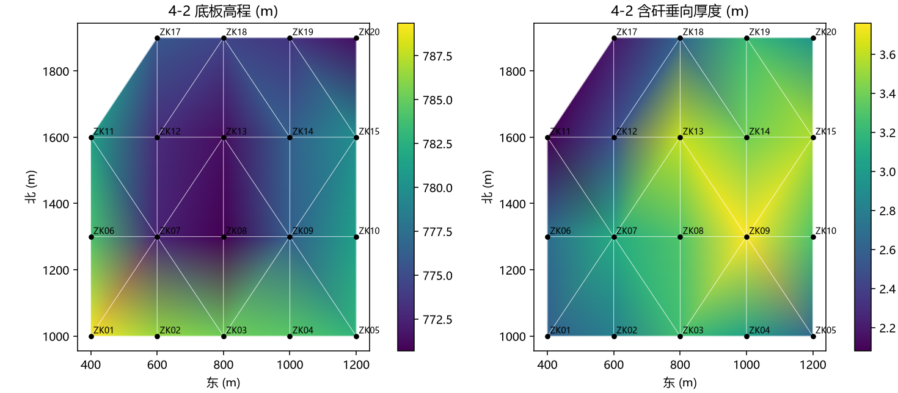
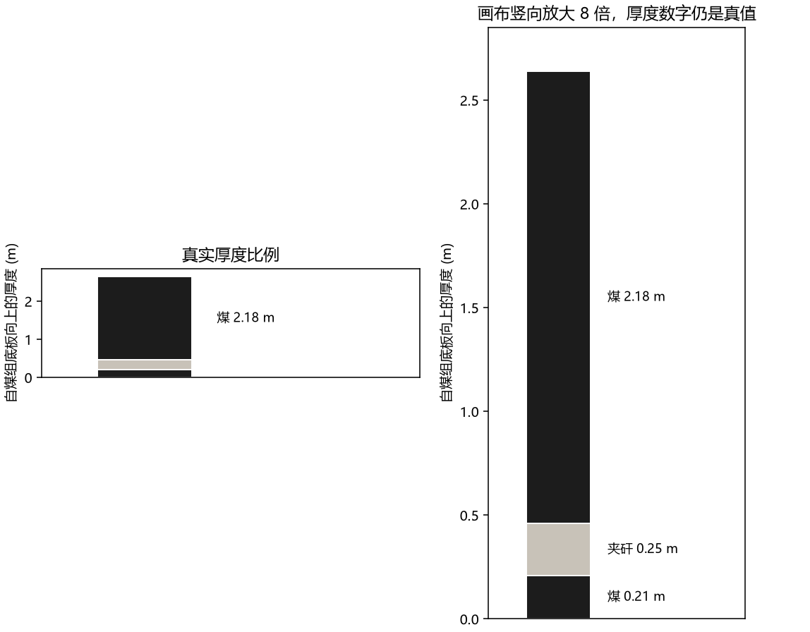
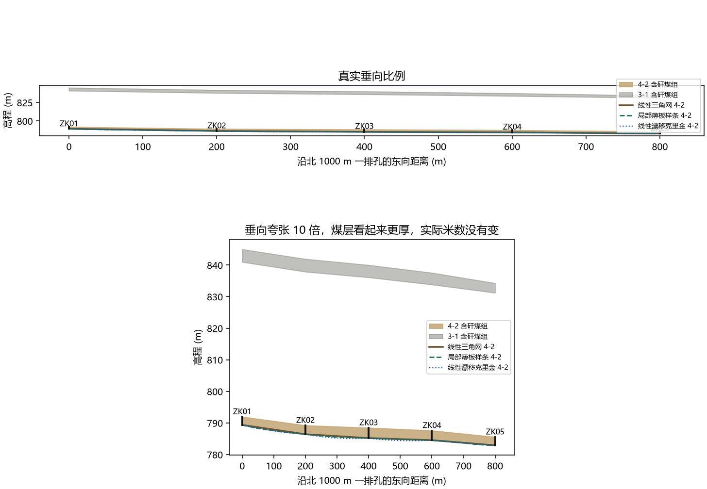
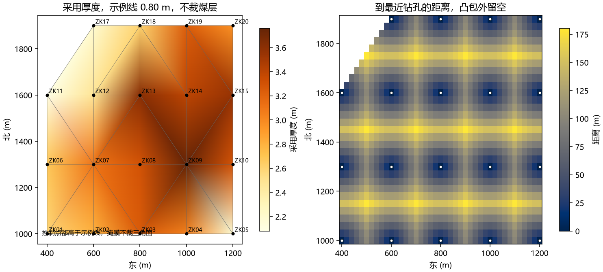

01
20 个钻孔
来自合成的 S003。X 是北向，Y 是东向。下表的东、北已经换成模型用的方向。标红的孔是结构、缺失或深度不一致的例子。4-2 封闭体没有 ZK16，因为它没有钻到这一层。
| 孔号 | 东 (m) | 北 (m) | 孔口 (m) | 终孔 (m) | 终孔层位 | 说明 |
|---|---|---|---|---|---|---|
| ZK01 | 400 | 1000 | 1219.37 | 510.0 | 延安组 | 参与 4-2 |
| ZK02 | 600 | 1000 | 1219.71 | 513.28 | 延安组 | 参与 4-2 |
| ZK03 | 800 | 1000 | 1220.16 | 514.95 | 延安组 | 参与 4-2 |
| ZK04 | 1000 | 1000 | 1218.74 | 514.2 | 延安组 | 参与 4-2 |
| ZK05 | 1200 | 1000 | 1214.32 | 511.4 | 延安组 | 4-2 含夹矸 |
| ZK06 | 400 | 1300 | 1217.63 | 513.6 | 延安组 | 参与 4-2 |
| ZK07 | 600 | 1300 | 1209.37 | 516.88 | 延安组 | 留出孔 |
| ZK08 | 800 | 1300 | 1209.23 | 518.55 | 延安组 | 两层煤之间丢芯 · 留出孔 |
| ZK09 | 1000 | 1300 | 1214.16 | 517.8 | 延安组 | 留出孔 |
| ZK10 | 1200 | 1300 | 1216.16 | 515.0 | 延安组 | 参与 4-2 |
| ZK11 | 400 | 1600 | 1218.61 | 517.2 | 延安组 | 参与 4-2 |
| ZK12 | 600 | 1600 | 1213.49 | 520.48 | 延安组 | 3-1 未见煤 · 留出孔 |
| ZK13 | 800 | 1600 | 1213.5 | 522.15 | 延安组 | 参与 4-2 |
| ZK14 | 1000 | 1600 | 1217.83 | 521.4 | 延安组 | 参与 4-2 |
| ZK15 | 1200 | 1600 | 1218.48 | 518.6 | 延安组 | 参与 4-2 |
| ZK16 | 400 | 1900 | 1218.21 | 403.97 | 3-1以下，未钻穿4-2 | 未钻穿 4-2，不进 4-2 封闭体 |
| ZK17 | 600 | 1900 | 1219.81 | 524.08 | 延安组 | 参与 4-2 |
| ZK18 | 800 | 1900 | 1220.29 | 525.75 | 延安组 | 参与 4-2 |
| ZK19 | 1000 | 1900 | 1218.57 | 525.0 | 延安组 | 钻探、测井与综合深度不一致 |
| ZK20 | 1200 | 1900 | 1213.62 | 522.2 | 延安组 | 参与 4-2 |
02
4-2 封闭体
顶底板用含矸总厚。平面约 800 米，煤厚约 3 米，真实比例下会扁成一条线。默认把高程放大，只为看清煤层；点真实比例可以回到 1 倍。拖动旋转。深色是顶板，浅色是侧壁，褐面是底板。

03
ZK05 的夹矸
综合栏结构是 0.21（0.25）2.18/2.64。封闭体用 2.64 m 做顶板。2.18 m 是下煤段的储量采用厚度，不改顶板。夹矸只留在这一孔，没有连到邻孔。右图把画布竖向放大 8 倍，米数仍是真值。

2.64 m含矸总厚。顶板高程 = 底板高程 + 这个数。
2.39 m纯煤。0.21 m 与 2.18 m 两段煤相加。
0.25 m夹矸，炭质泥岩。不向其他孔延伸。
2.18 m采用厚度，只取下煤段。上段 0.21 m 低于示例线，仍留在柱上。
04
北 1000 m 的参考剖面
沿 ZK01 到 ZK05 取一条正东向直线。上图是真实垂向比例，下图高程方向画成 10 倍，用来看清煤厚。3-1 在 4-2 之上。这不是甲方剖面图的恢复，也没有拿来训练。

05
留出、隐藏、再加回
同时藏起 ZK07、ZK08、ZK09、ZK12，只给仍落在训练凸包内的点打分。样条的底板误差略低，差距相对 5 米量级很小，封闭体仍用三角网。隐藏 ZK13 是历史记录回放，不是新打的孔。
四孔留出，三角网底板平均绝对误差
四孔留出，含矸厚度平均绝对误差
当前封闭体体积
点一个钻孔，查看厚度口径和 S003 单元格。

0.80 m
图件上的示例业务线，不是通用可采标准，也不把薄煤做成尖灭。这 19 个控制点的采用厚度都高于它。等厚线和甲方剖面没有进入训练，避免同一批钻孔被算两遍。